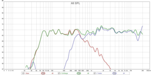

Engineering Projects
This page documents some of the many engineering projects I've completed while pursuing my undergraduate degree.
MicroCART
MicroCART is a senior design project in which we are to create a modular and easy-to-use quadcopter platform for research and high level classes. The quadcopter is controlled by a ZyboBoard, a development board that features a Zync7000 SoC that combines a dual-core ARM processor and an FPGA. My tasks for this project include researching and purchasing hardware upgrades, the development and testing of a secondary WiFi microcontroller to allow the quadcopter to communicate with the groundstation over WiFi, integrating an optical flow sensor into the quadcopter software, and general software architecture design.
More information about the MicroCART project can be found here
Rhopalia
Rhopalia is an open source and cross-platform network-based LED light control system that I'm developing as a personal project. Rhopalia is written in C++ using the boost libraries for C++ to ensure cross-platform support. A Rhopalia instance consists of one LightHub, plus one or more LightNode instances. Rhopalia uses the UDP protocol to automatically discover LightNode instances on the network and send color updates. Example LightNode implementations that I've created include LightNode-RPi (LightNode for Raspberry pi, supports up to 5 analog strips, and either one APA102 digital strip or one APA102-based LED Matrix), LightNode-ESP (LightNode for ESP8266, supports one APA102 digital strip), LightNode-Visualizer (renders an LED Matrix on an OpenGL-supported display), and LightNode-Simulator (cross-platform simulator that supports analog, digital, and matrix strips). The Rhopalia system supports different light effects, which are classes that implement the LightEffect interface. Currently, the most noteworthy effects are Sound-reactive effects that create colorful effects for all types effects (shown in video below):
The software for this project can be found on my GitHub page
Portable Speaker
This speaker is a personal project that is still in development. The speaker consists of one bass driver and two treble drivers in a 2.1 channel configuration. I used Sallen-Key lowpass and highpass filters to cross over the audio signal from the bass driver to the trebble drivers, and additional filters to sculpt the bass extension. I chose a crossover frequency of approximately 350Hz. This allowed me to perform baffle-step compensation (which occurs at that same frequency) by simply increasing the gain of the bass driver. The speaker box was designed using WinISD, and is ported with a resonant frequency of 58Hz, and the speaker is reasonably flat from 60Hz to 20Khz.

{kind=link}